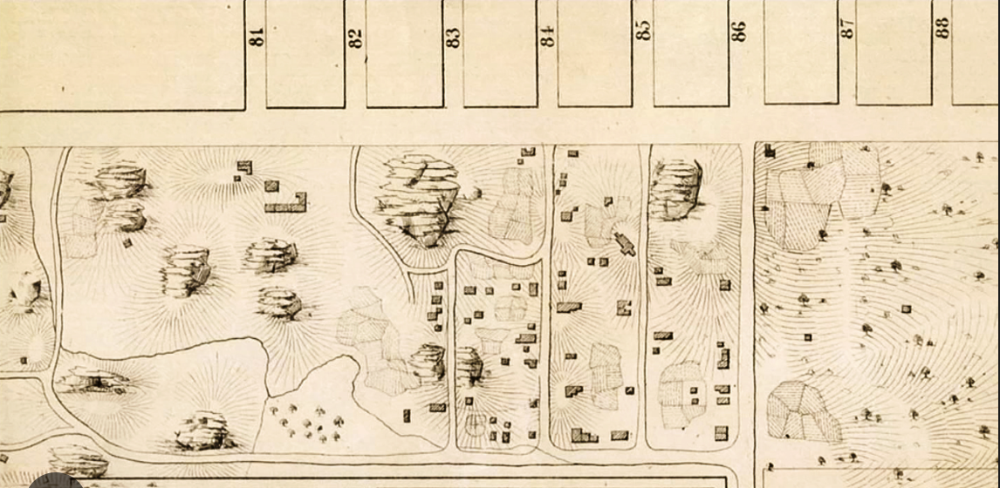

“Seneca Village is important because its history and its residents do not conform to the conventional historical narrative of Central Park, New York City, or even of the United States…[The history of Seneca Village] helps to expand the American narrative so that it is both more accurate and more inclusive.” -Institute for the Exploration of Seneca Village History, Inc.
Address:
West Side of Central Park between 82nd-89th Streets
New York, NY 10024
Website
It is 1840 and downtown the city is crowded, houses and blocks are being built closer and closer together. There’s not enough fresh air or clean water, or a sewage system that can keep up. Recent immigrants from Europe keep coming and neither the city, state, or federal government are providing adequate resources for these growing communities. Free African-American New Yorkers are at particular risk. Slavery was not officially abolished in New York State until 1827, and regardless of status, African-Americans continue to face a perpetual threat of violence, kidnapping (to then be sold into slavery in southern states), and daily discrimination. Many are seeking autonomous communities removed from the density of the city in the southern tip of the island, relief from the poor conditions, and sanctuary from racism’s daily violence. Imagine now the terrain of what we call Central Park today. Imagine rocky bluffs and low marshlands (already deforested), and open fields. Imagine walking into a thriving village. It’s the 1840s and if it’s your first time visiting Seneca Village it’s likely you’ve never seen anything quite like it in New York City. Along one border is the Croton Receiving Reservoir, which receives and stores clean water for the city. Lined with a stone border and walkway, it is both a domineering presence and, on the walkway above, gives a view that other New Yorkers travel by omnibus or private carriage to see. On another edge is Summit Rock, a tall rocky hill that is undeveloped. Climbing to its ridge gives you a breeze, quiet, and a view overlooking the reservoir and the village. Just beyond it is a natural spring, and you see residents coming and going, accessing their own source of clean water. Now you walk into the village center. You pass many two, even three-story houses, some with porches, most well-maintained. You notice something different here, a quality of security and prosperity, a feeling. The homes are owned by the people who live in them and the majority of those homeowners are African American, as are two-thirds of the residents. The remaining third of the town are Irish immigrants, and a scattering of German families, most of whom rent from African American homeowners. All seem to live peacefully together. You pass a church and peer in through the doors of All Angels and see Black and White residents worshipping together. On a porch, you hear a group of children reviewing their lessons, and it differs from other neighborhoods of the growing city, where children are as likely to work as they are to go to school. As you head to one of the town’s stores, you pass a few African American women discussing their properties, and you realize with a start that they are the owners of their land and houses, a rare feat. Perhaps you visit the farms owned and run by the residents, guaranteeing them at least some autonomous sources of food. You see people coming and going between their jobs in the city. When you leave the village, perhaps you feel regret at having to depart. There is a thriving community here, doing much to care for each other.
And so later, in the 1850s when the newspapers start to describe Seneca Village as full of “squatters” you are surprised. But you learn, the city has plans. The wealthy of the city want a park, a grand expanse to rival the great parks of Europe. They want to be removed from the poverty of downtown and they want to make sure they get their own good air and recreation with the creation of this park. The city claims over 800 acres through eminent domain. The residents of Seneca Village file objections, many of them, trying to preserve the prosperous community they created, their homes for almost four decades. They are denied and though the city pays them the market rates for undeveloped land, theirs was not undeveloped land, and many argue the payments are too low. By 1857 all legal means had been exhausted and the last of the families were forcibly evicted from their land.
Fast-forward to the present moment, 2025. The houses that border the park, the area that used to be Seneca Village, are some of the most valuable real estate in the world. If the park’s borders had been modified somewhat, re-positioned to outline the town, a rectangle of about 10 city blocks and 1 avenue block, it may still have been an enclave of generational African American wealth. The efforts of the Seneca Village Project unearthed, literally, much of this story. Formed in 1998 by Cynthia Copeland, Nan Rothschild, and Diana Wall, the Project conducted an eight week excavation of the Seneca Village site in 2011, revealing a home’s foundation and the roads once walked by the residents of Seneca Village.